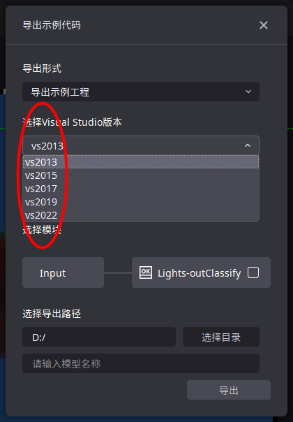

二次开发指南
引言
AIDI 3.2 提供了一个用户友好的二次开发辅助功能，使得用户可以在 GUI 界面上根据自己的AI模块和参数配置导出定制化的示例代码、模型与文档。这一过程不仅简化了集成流程，还确保了用户能够针对其特定的业务需求进行高效的二次开发，加速了 AI 技术在实际产业应用中的落地。
建议开发运行环境
开发系统： Win 10/11 编译工具： Visual Studio 2022（最小支持Visual Studio 2013） 目标框架：支持.NET Framework 4.5以上
导出可直接运行的VisualStudio示例工程
第一步：
第二步：
第三步：

第四步： 选择开发语言以及模块
第五步： 选择导出路径，定义模型名称 第六步： 点击导出即可
导出示例代码
C++依赖准备
第一步：创建VS工程

第二步：复制 CPP 文件到你的本地项目中 将导出的 example.cpp 文件内容粘贴到 VS 中的 .cpp 文件中。
第三步：配置项目 打开 Visual Studio 并加载您的项目。在“解决方案资源管理器”中，找到您想要配置的项目。右键单击项目名称，从弹出的上下文菜单中选择“属性”选项。
在“属性页”窗口中，导航到“配置属性” -> “VC++目录”。

在“包含目录”字段中，添加 AIDI 安装包内的“develop/C++/include”文件夹的路径。 这个文件夹包含必要的头文件。你可以手动输入路径，也可以使用右侧“下拉”按钮浏览并选择文件夹。

在“库目录”字段中，添加 AIDI 安装包内的“develop/C++/lib”文件夹的路径。 这个文件夹包含必要的库文件。同样，你可以手动输入路径，也可以使用“下拉”按钮浏览并选择文件夹。

转到“配置属性” -> “链接器” -> “输入”，在“附加依赖项”字段中，添加“visionflow.if.lib”。
如使用Debug模式，转到“配置属性” -> “链接器” -> “调试”，需确认“生成调试信息”字段选择“生成调试信息（/DEBUG）”。

如使用中文工具名或中文路径名，转到“配置属性” -> “高级“，需确认”字符集“字段不要选择”未设置“。

注：环境变量，需注意环境变量的优先级，上面的环境变量优先级高于下面的环境变量。
C#依赖准备
第一步：创建VS工程

第二步：将导出的 example.cs 文件内容粘贴到你自己的 .cs 文件中。 第三步：配置项目
将 AIDI 安装目录内的“develop/csharp/visionflow.cs”文件复制到你的 C# 项目中的所需位置。
在“解决方案资源管理器”中点击“显示所有文件”，找到“visionflow.cs”并右键点击，选择“包括在项目中”。
对于目标框架为.NET Framework的 C# 项目，需要额外的配置。在“解决方案资源管理器”中，右键点击你的项目， 从上下文菜单中选择“属性”。选择“生成”，确保“首选32位”未选中。 注：环境变量，需注意环境变量的优先级，上面的环境变量优先级高于下面的环境变量。
AIDI 二次开发模块使用指南
1.打开AIDI软件 启动 AIDI 软件，进入主界面。
2.访问具体的工程并选择“模型与示例代码导出”
在 GUI 界面中，在菜单栏“模型”中选择“模型与示例代码导出”。
3.选择所需导出的 AI 配置
开发语言 模块 导出路径 模型名称
4.导出二次开发示例 完成导出配置后，点击“导出”按钮。本地将生成二次开发所需的示例代码，包括CPP文件、模型文件等和相应的Readme文档。
5.阅读Readme文档 导出完成后，打开Readme文档。该文档包含了如何使用导出的CPP示例代码以及如何将AI模块集成到您的业务系统中的详细说明和准备步骤。（其中 C# 和 C++ 的要求不同！）
6.集成到业务系统 按照Readme文档中的指导，将CPP示例代码集成到您的业务系统或产线中。您可能需要根据自己的系统环境和需求对代码进行适当的修改和调整，具体可参照示例中的注释等。
7.测试和验证 在集成了AI模块代码后，进行充分的产线测试以确保一切工作正常。同时验证AI模块的功能是否符合您的业务需求，并确保其在实际产线环境中稳定运行。 请注意，具体的操作步骤可能会根据AIDI软件的版本和界面设计有所不同。